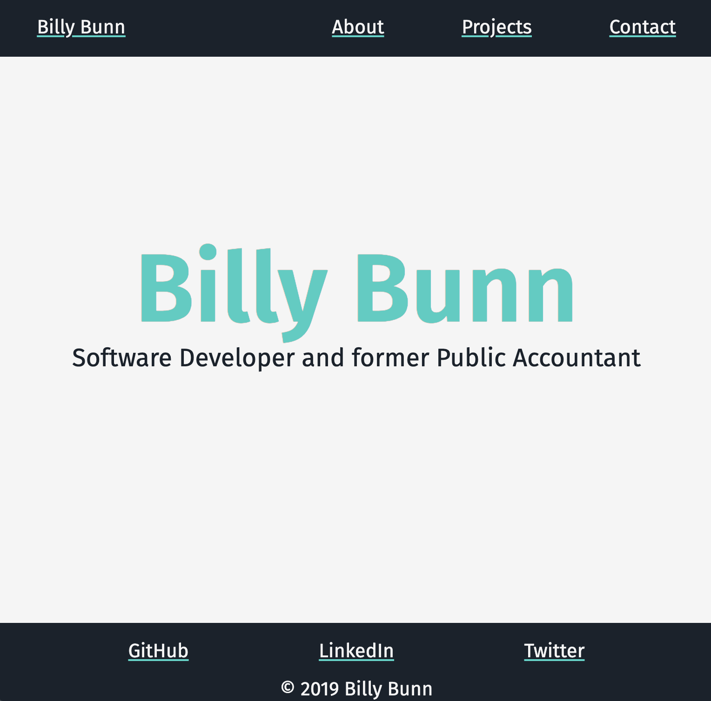
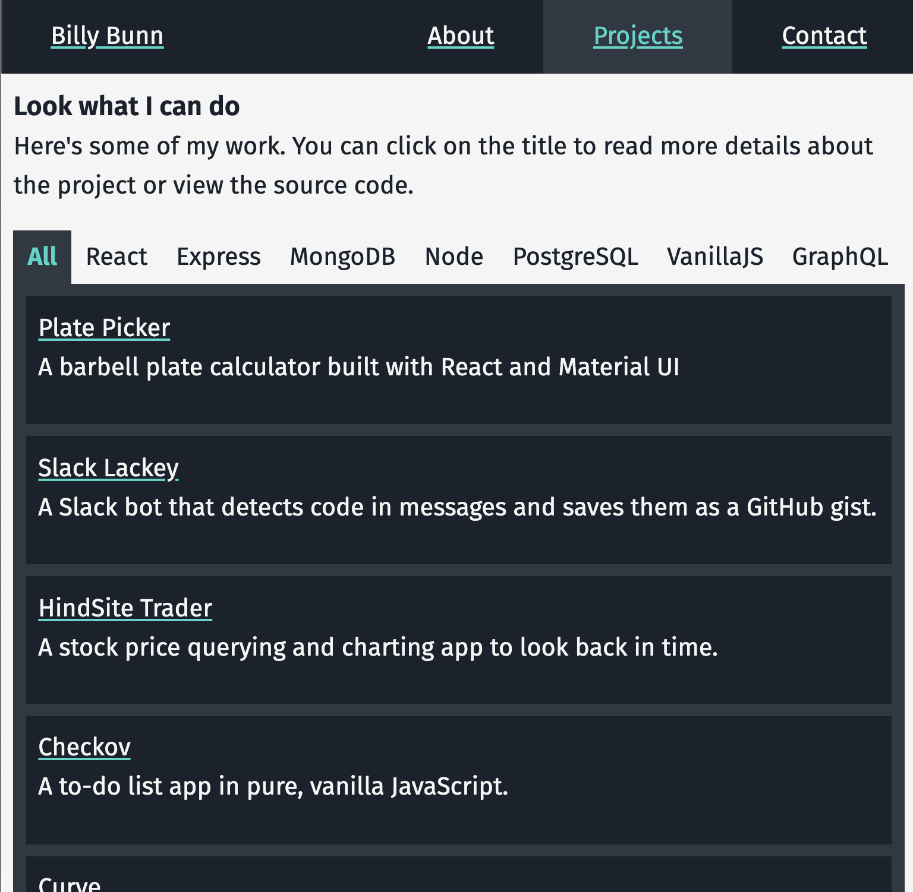

Personal Website
My personal portfolio website built with Gatsby.js. A fun venture into the JAM stack and a constant work-in-progress.
Rather than go off of an existing portfolio template or starter-site, this project was started with a bare-bones Gatsby site and built up from there. The site is currently deployed with GitHub pages here.
Features
- Site pages programmatically created from different data sources with GraphQL and assigned different page templates (see
gatsby-node.jswhere this configuration was made)- Site pages (e.g.,
billybunn.com/about) are programmatically created with.jsfiles in thepages/folder (as with most Gatsby sites) - Project pages (e.g.,
billybunn.com/projects/my-project) are programmatically created from markdown files
- Site pages (e.g.,
- Pagination between project pages
TabFiltercomponent for displaying projects and filtering based on custom tags. This component allowed for a much cleaner API on the/projectspage where content is populated by a static GraphQL query.- Responsive header rendering with a custom
useWindowSizeReact hook MobileHeadermenu component that closes on click outside using customonClickOutsideReact hook- CSS-in-JS styling with Styled Components
See project source code on GitHub

Resources and References
Inspiration and direction for certain features was gathered from the sources credited below.
